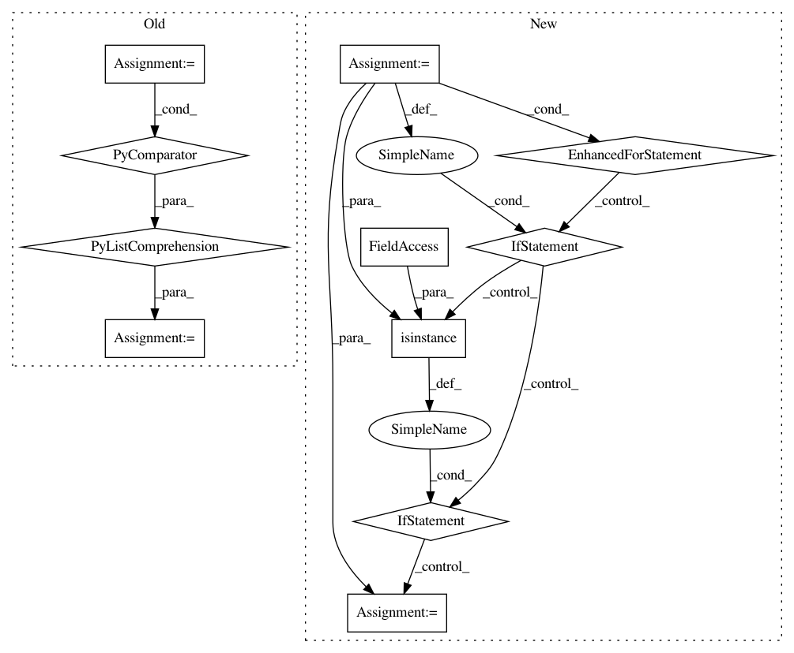

fa6bd25500ef229d03102aa49d71b969d64f1f09,app/websocket/app/main/persistence/utils.py,,snapshot,#Any#,8
Before Change
// Add new objects from database
new_keys = current_keys - last_snapshot_keys
objects = [
WorkerObject(worker_id=worker.id, object=worker._objects[key], id=key)
for key in new_keys
]
result = db.session.add_all(objects)
db.session.commit()
last_snapshot_keys = current_keys
After Change
new_keys = current_keys - last_snapshot_keys
objects, models = [], []
for key in new_keys:
obj = worker.get_obj(key)
// If obj is a Plan we save in the database as a model
if isinstance(obj, Plan):
models.append(TorchModel(id=key, model=sy.serde.serialize(obj)))
// If obj is Jit we ignore it
elif isinstance(obj, torch.jit.ScriptModule):
continue
// If obj is a parameter we wrap the data and store it in the database
// as an object
elif isinstance(obj, torch.nn.Parameter):
obj = obj.data.wrap()
objects.append(WorkerObject(worker_id=worker.id, object=obj, id=key))
// Otherwise we just store the object in the database
else:
objects.append(WorkerObject(worker_id=worker.id, object=obj, id=key))
db.session.add_all(objects)
db.session.add_all(models)
db.session.commit()
last_snapshot_keys = current_keys
In pattern: SUPERPATTERN
Frequency: 3
Non-data size: 11
Instances
Project Name: OpenMined/Grid
Commit Name: fa6bd25500ef229d03102aa49d71b969d64f1f09
Time: 2019-09-10
Author: mariannelinharesm@gmail.com
File Name: app/websocket/app/main/persistence/utils.py
Class Name:
Method Name: snapshot
Project Name: nipunsadvilkar/pySBD
Commit Name: 373609c8a653a614ec61cebaacd9d538a67f67df
Time: 2019-05-11
Author: nipunsadvilkar@gmail.com
File Name: pySBD/processor.py
Class Name: Processor
Method Name: split_into_segments
Project Name: has2k1/plotnine
Commit Name: 6fc1200269b0a6af2e231dda6149ce5b84ef3e37
Time: 2016-04-06
Author: has2k1@gmail.com
File Name: ggplot/utils/doctools.py
Class Name:
Method Name: dict_to_table